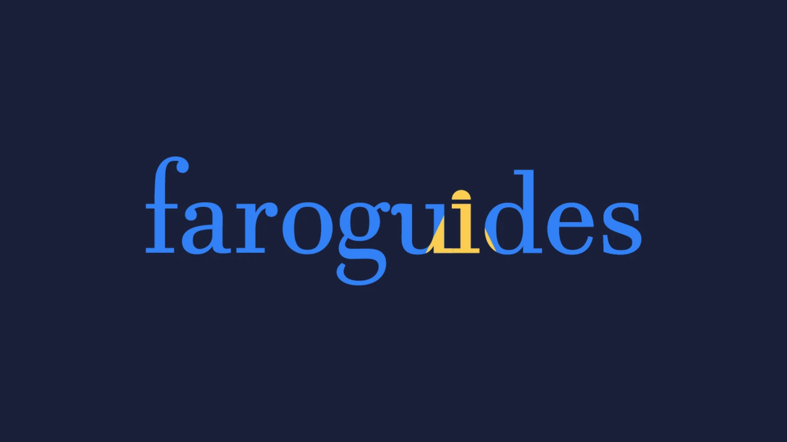
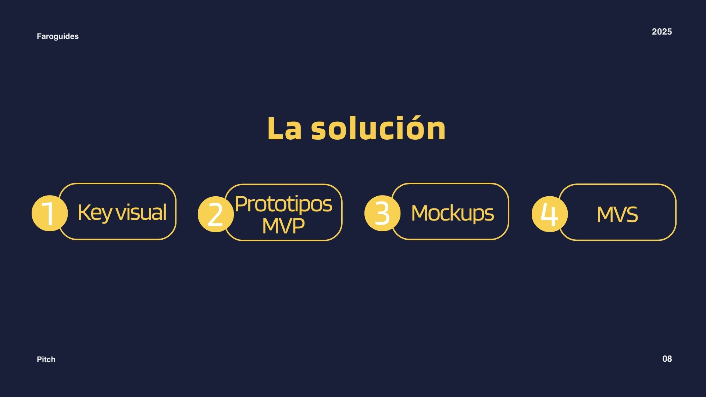
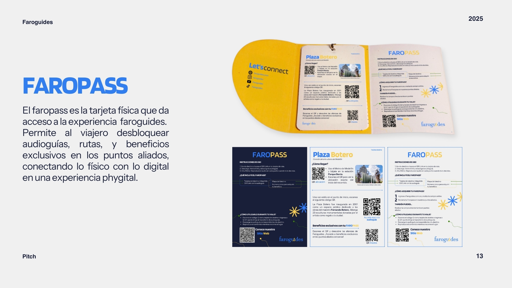
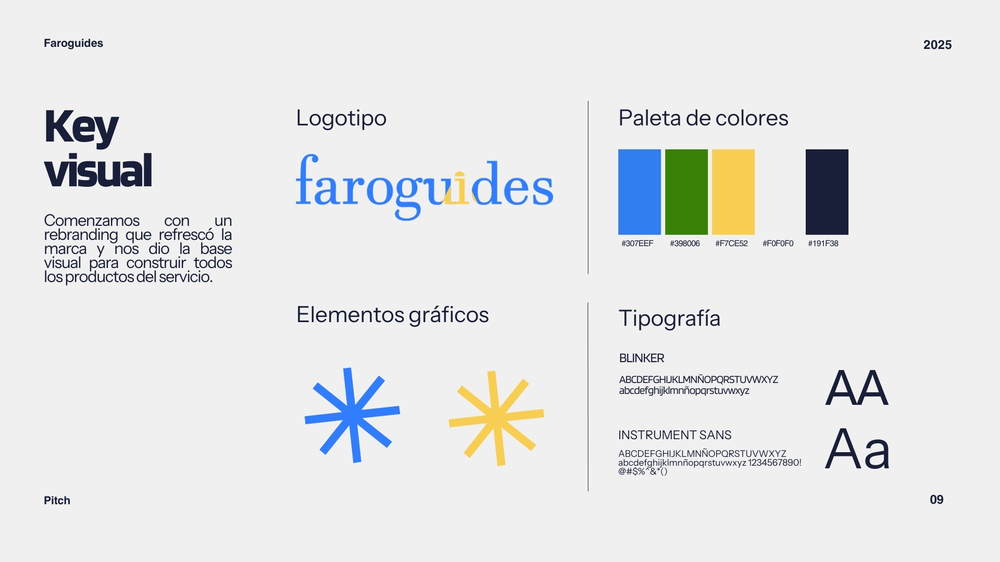
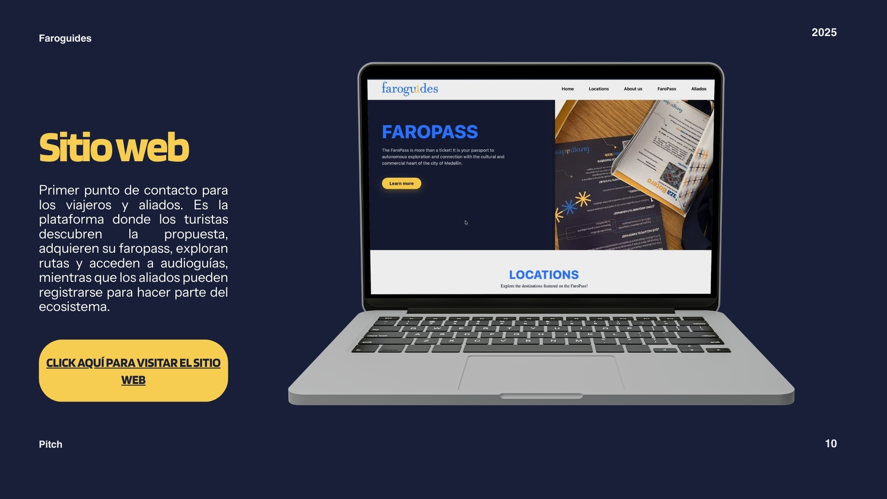
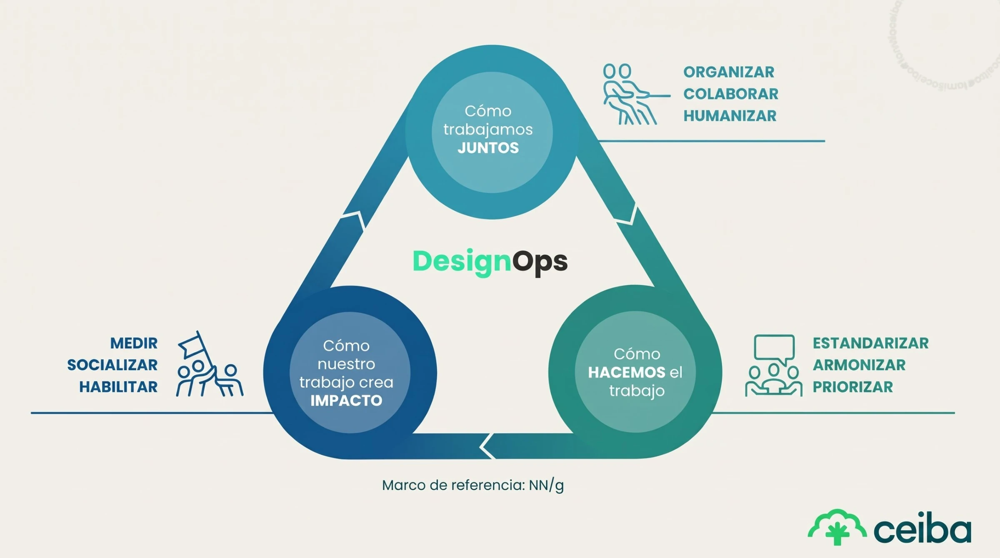

Hola soy Sara!
Me apasiona el diseño que hay detrás de los grandes resultados, convirtiendo procesos en formas de pensar que crean valor real.
Diseño UX
FaroGuides
Explorar proyecto
DesignOps
CeibaDigitalOps
Explorar proyecto"Me dedico a crear experiencias significativas a través de un enfoque de diseño multidisciplinario."
Me defino como una amante de la estrategia. Veo el mundo a través de los ojos de una diseñadora y traduzco esa perspectiva en soluciones reales. Diseñamos para resolver problemas complejos y atender necesidades importantes.
Para mí, el diseño es una herramienta de transformación: no solo cambia lo que hacemos, sino cómo pensamos.
Ahora mismo estoy…
- Escuchando:
- Música de Zara Larsson
- Soñando con:
- Un viaje a Islandia
- Comiendo en:
- Mi escritorio
Diseño UX
FaroGuides
Una app de audioguías para explorar Medellín de forma autónoma, sin conexión.
Contexto
FaroGuides nace de la necesidad de viajeros reales. Desde Ultrasonido Studio se desarrolló una app de audioguías que permitía explorar Medellín de forma autónoma, integrando el diseño sonoro y la tecnología para crear rutas narrativas disponibles sin conexión.
Sin embargo, la marca enfrentaba un reto clave: no contaba con un modelo de negocio sostenible hacia el usuario final, y la experiencia actual no era lo suficientemente memorable para monetizarla.
.png)
Objetivos
- Rediseñar la experiencia para que el viajero esté dispuesto a pagar.
- Crear un sistema phygital memorable que conecte contenido, ciudad y usuario.
- Replantear producto, público y modelo B2C para faroguides.
La solución
Cuatro entregables: key visual, prototipos MVP, mockups y MVS.


Key visual
Comenzamos con un rebranding que refrescó la marca y sentó la base visual para construir todos los productos del servicio.

Mi rol
- Liderazgo en Service Design: validación de la experiencia mediante investigación de campo y entrevistas.
- UX/UI & Accesibilidad: arquitectura de información y estándares de usabilidad.
- Web Development: montaje y desarrollo técnico del sitio (build-stage).
Sitio web
Primer punto de contacto para los viajeros y aliados: los turistas descubren la propuesta y adquieren su faropass; los aliados pueden registrarse para hacer parte del ecosistema.

DesignOps · UX
CeibaDigitalOps
Diagnóstico de las dinámicas internas del equipo Digital de Ceiba para eliminar cuellos de botella y amplificar su impacto.
Contexto
Ceiba Software es una empresa líder en tecnología con un equipo Digital encargado de la comunicación, el diseño y los canales internos. A pesar de ser el soporte central de los activos de la compañía, el equipo enfrentaba cuellos de botella operativos que afectaban la eficiencia y la calidad de sus entregables.
Diseño o ser un diseñador
“Transformar la manera en desarrollar productos, servicios, procesos y cualquier estrategia de la empresa”
Design Thinking.
Lidera el presente.
Crea el futuro.
.jpg)
El desafío principal era optimizar el desempeño del equipo mediante la gestión eficiente de personas, procesos y herramientas. El proceso consistió en realizar un diagnóstico profundo de las dinámicas internas para amplificar el valor e impacto del trabajo del equipo Digital en la organización.

Objetivos
- Identificar y eliminar fricciones en el flujo de trabajo para mejorar los tiempos de entrega.
- Alinear roles y habilidades para potenciar el crecimiento profesional y la motivación.
- Establecer canales de comunicación y herramientas de documentación claros y efectivos.
Proceso
Mapeo del flujo de trabajo entre quien solicita, el líder de Marketing y el equipo Digital.

Mi rol
Auditoría interna: realización de un análisis exhaustivo del talento, evaluando cargas de trabajo, habilidades clave y la cultura interna del equipo.
Diagnóstico de procesos: identificación de brechas críticas en las prácticas de comunicación, la gestión de reuniones y el aprovechamiento de herramientas tecnológicas.
Arquitectura de proyecto: definición de la estructura de la solución y los requerimientos técnicos necesarios para la optimización operativa.
Consolidación de hallazgos: generación de accionables estratégicos orientados a transformar la operatividad del equipo en un sistema escalable y eficiente.
.jpg)